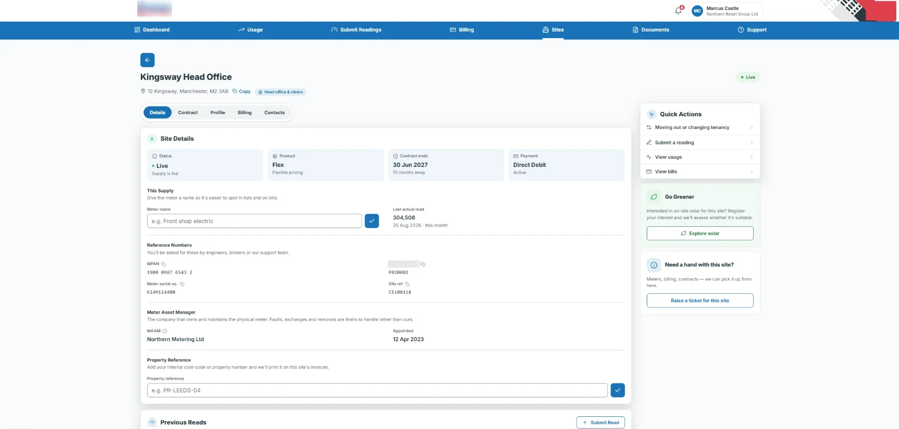
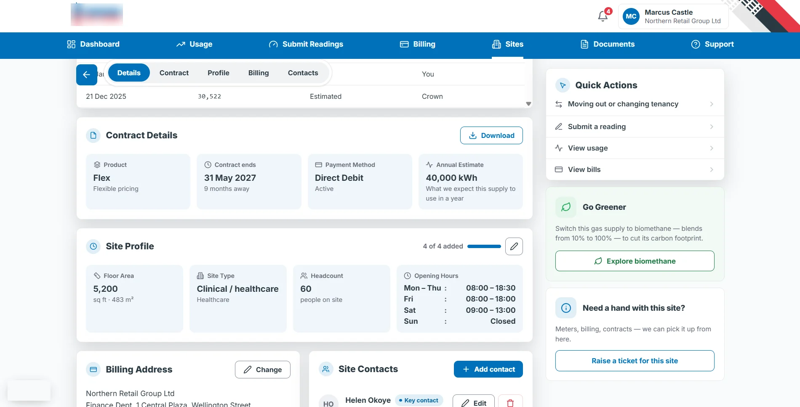
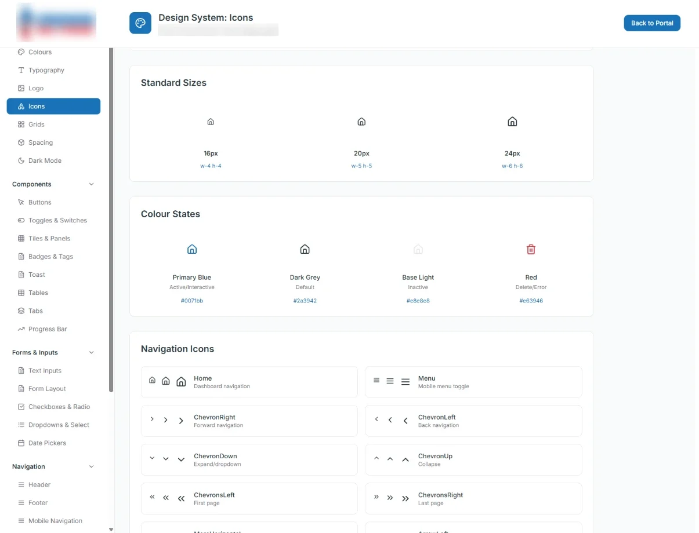
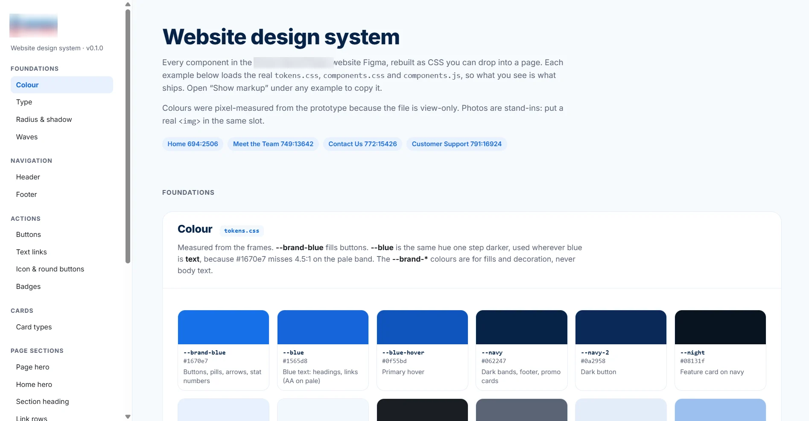

Business Customer Portal Redesign
Turning a self-service portal that customers avoided into one they can rely on, so routine tasks don't need a phone call.
The problem
Only around 30 customers a month used the old portal. It crashed, hid invoices and often failed to send meter readings, so most customers phoned instead.
My role
Sole designer, end to end: research, interaction and visual design, usability testing, the design system, accessibility and QA support.
What I did
Used customer service call data to find the main reasons customers were calling, then redesigned the portal around those tasks. Tested each page in rounds of 5, with 30 participants in total, and iterated whenever 3 or more struggled.
Results so far
Meter reading completion rose from 15% to 100% in testing. Live impact data will follow after launch.
Energy terms used in this case study
- MPAN
- Electricity meter point number.
- MPRN
- Gas meter point number.
- MPXN
- Umbrella term covering both.
- Register
- One set of readings on a meter. Some meters have separate day and night registers.
- Managing agent
- A company managing energy for many properties on behalf of owners.
- Consolidated billing
- One bill covering several sites.
Self-service that people could actually use
Pre-launch testing with 30 staff from across the business. Live customer data will be added after launch.
| 95% | of participants answered the key invoice questions after iteration |
| 15% → 100% | of participants could submit a meter reading, first version vs final |
| 95% | of participants found all usage information in 3 seconds or less |
| WCAG | audit completed: fixed colour contrast and text size, and built legal requirements into the final designs |
An unreliable portal that pushed customers to the phone

Now showing: Dashboard
The old portal technically let customers do everything they needed. In practice it often crashed, invoices and documents were hard to find, and meter readings regularly failed to send. Only around 30 customers a month used it.
So most customers phoned instead. The top reasons were meter readings, VAT and invoices. Much of this was failure demand: contact caused by the service not working, not by customers needing to speak to someone.
The business needed to grow without hiring at the same rate in metering, customer service and credit control. Customers needed to get routine tasks done without waiting on the phone. A portal that worked would serve both.
The portal is one part of a bigger service
A meter reading doesn't end when a customer presses submit. It moves on to the teams behind the portal, and when something goes wrong it can come back as a query or another call.
So I looked at each page in terms of the whole journey: what the customer is trying to do, which team handles it behind the scenes, and where it was breaking down.
Who we designed for, and how we found out
Users. Our primary users were businesses buying gas and power directly, not through a broker. Most have a few accounts, each with a few sites.
Methods.
- Call data analysis. Customer service data showed what customers needed most: submitting meter readings, tracking usage, viewing site information, changing tenancy, requesting VAT changes, paying invoices and downloading documents.
- Stakeholder sessions. The PM and I met customer service, metering, credit control and legal to understand their goals and constraints.
- Language review. We agreed which industry terms customers know and should keep, and which were internal jargon that would confuse them.
- Usability testing. Task-based testing on working prototypes (see Testing).
Managing agents and brokers manage much larger portfolios, so I designed a first version of a separate Managing Agent portal. It was paused when priorities changed, and I built the design system and layouts so it can be picked up later.
Dense data, a short timeline and low trust
Dense data
Sites, meter readings, invoices and usage all needed a lot of information on screen.
Three months
The engineer started building before my designs were finished, so I designed in priority order and stayed in close contact to keep design and build in step.
Low trust, no customer access
The business had been through several product and delivery teams in recent years, so trust in new work was low. I also couldn't test with real customers before launch. Instead I worked closely with customer service and metering staff, who deal with customer queries every day.
How we worked
The PM built rough functional prototypes in Claude so stakeholders could react to something working rather than a document. They were useful for agreeing what each page should do, but not for usability. From V3 onwards, the design is mine: I turned those prototypes into something people could use, and built and refined every design in Claude Code.
I used AI to generate code and layout options. I made the decisions: what to build, what to test and what to throw away. The versions are:
V1
The PM's prototype, built from research and requirements.
V2
Updated by the PM for changed requirements.
V3
My first iteration.
V4
My second iteration, after testing.
V5
The final design, matching the new company website.
Making dense data readable
This was the hardest part of the project. Participants did real tasks on working prototypes: submitting a meter reading, finding and paying an invoice, answering a VAT question, checking usage against their contract.
I tested each page in rounds of 5. If 3 or more people struggled with a task, I iterated before moving on. In total I tested with 30 people from across the business, from HR to credit control.
Testing with staff rather than customers has limits, so I used the mix deliberately. People who had never used the portal showed whether it was easy to learn. Metering and customer service staff checked it matched how the service really works. I also tested every feature on the engineer's live build with live data, to catch where the build differed from my designs.
Invoices
Customers typically have a few accounts with a few sites each, so the first version used an expandable table.
VAT queries were one of the most common reasons for calling, so where the VAT option sat mattered. Stakeholders wanted it visible above the table; the team wanted it inside, next to the VAT figures. I kept both: a clear route for customers arriving with a VAT question, and context for customers already checking an invoice.


Testing showed that users didn't realise rows could expand, got stuck on outstanding invoices when trying to view all, and struggled to pay selected invoices.
What I changed: I turned rows into cards so they looked clickable, and moved outstanding invoices into their own simple table. I made "Pay all" the main action, because clearing the full balance was a key business need and the simplest route for most customers. I kept a separate "Make a payment" option so customers who need to pay a different amount aren't forced down one route.

Meter readings
The first version was also an expandable table, and it confused users in the same way. I had to cover long meters, day and night registers (separate readings for different times of day), and corrected meters.


I avoided a full table at first because I thought it would look cluttered. But participants who knew meter readings well understood them far better than I did, and entered them fastest in a full table. For people who know their meters, the "cluttered" option was the quickest, so I went with it.


Stakeholders were against designing for mobile at first. I advocated for it for three reasons. Customers use the portal out on their sites, so they need to submit readings remotely, standing at the meter rather than back at a desk. A phone's camera lets them photograph the meter instead of copying a long string of digits by hand, so fewer readings come in wrong. And WCAG's reflow guideline expects pages to work at narrow widths without sideways scrolling, which also helps anyone zoomed in on a desktop. Fewer wrong readings also means fewer estimated or corrected bills, and fewer calls later in the journey.


Usage
The original scattered data across the page with no clear message about how usage was going.

I combined cost vs forecast and target into one card and turned top sites into a pie chart. I removed sites needing attention, because it wasn't actionable here and the dashboard already surfaces it. I made the gas/power toggle and site selector sticky, and added a toggle between energy units and pounds so users can connect usage to cost.


Sites
Sites had to work grouped by account or individually, and stakeholders wanted everything visible.

Testing on invoices showed that expandable tables hid information, so I started with cards.


Some feedback suggested users identify sites by account, so I added a group-by option.


Individual site pages have a sticky header so users always know where they are. Customers can also now do things that used to mean a phone call: report a change of tenancy, add site contacts, add property and site references, add site-level data to improve usage predictions, and view past meter readings. These move tasks from phone to self-service. After launch, I'll track whether calls about them go down.


Documents, support, billing and settings
These were more straightforward: grouping information logically and applying the design system so they matched the rest. Documents moved from a card-based page to a searchable, filterable list with counts, grouped by time period, so customers with many sites can find a specific letter quickly.


Designing through changing direction
The dashboard changed direction more than any other page. It started with upsells, which stakeholders then removed, so I replaced them with the information they asked for. Later, stakeholders decided the inherited design system didn't suit the brand and asked for a new dashboard. I used that as a chance to match the company website, adapting its new design system, and produced two versions.


Extending an inherited system, in code
I inherited a design system from the designer before me. It was functional but plain, and stakeholders felt the pages looked too alike. I extended it with more colour, new responsive components and new visuals. I started by maintaining the existing system in Figma, then moved to iterating on it myself in code, using Git, Claude and a shared repository the PM, engineer and stakeholders all used, so everyone worked from the same components. The engineer took the code and the designs, which is why handoff could start while I was still designing. The dashboard is the exception: it uses a modified version of the website's system.




Adding colour
Stakeholder feedback was that the pages felt too similar and plain. I added a colourful header and footer and redesigned the cards, so each page has its own look while staying one product.
The final version: matching the new website
Near the end of the project, stakeholders asked for the portal to match the new company website, which was launching at the same time. They hadn't wanted that before, so I redesigned the system to match it for the final version.
Shipping it, and what comes next
Accessibility & compliance
I audited the portal against WCAG and fixed issues with colour contrast and text size, among others, and worked with legal to build the required additions into the final designs.
Handoff & QA
Engineering handoff began before my designs were finished, because development moved so fast. QA happened at the end of the project, and I supported it by checking the built pages against my designs.
Measuring impact
After launch I'll measure:
- Digital take-up. Monthly active customers, against a baseline of around 30.
- Completion rate. Meter readings and payments completed online.
- Reading accuracy. Fewer rejected or estimated readings.
- Contact volume by reason. Calls and emails about meter readings, VAT and invoices.
- Satisfaction. A short feedback prompt after key tasks.
I'll update this case study with real numbers.
What I'd do differently
One unified prototype
Each page was built as a separate prototype and wired together later. One shared prototype would have been easier to test and hand over.
Design system first
I built it alongside the pages, reactively. Building it first would have saved rework, especially when brand direction changed.
Stakeholders earlier
Brand direction changed late, and earlier involvement would have caught it sooner.